"Mr. Punch's"
ANIMAL LAND
·DRAWN & WRITTEN BY·
·E. T. Reed.·
·maker of "PREHISTORIC PEEPS."
:BRADBURY, AGNEW & Co:
·LONDON·
There is two kinds of prefisses one if it is by yourself and the other if you get a swell riter to do it for you. I'm going to do it by myself because I have done the talk undeneath the picktures so nice that I think people would be greviously diseppointed if Mr. Andrew Lang or someboddy was to do it instead like he did for Sybil Corbetts book (thats the other little girl what started "Animal Land"). He did it awfull nice of course and then you can get such nice things into it about your grate tallent and your emaggynation if he does it. He is so lerned and drags in illusions to other grate authers but when you can auth as nice as what I can there isnt realy no need. If you do it yourself you must appolergise for it all (they allways do) and say it shall not accurr again. I am quite at the openning of my corea (I saw that in the papers) so I want ellowances made for my stile and imperfect penship—I want it all put down to yewth.
I have done allmost all the most knowtable Animals—you cant do evryboddy when youve got musick and depportment to do too.
(I never thaught I would get to riting a Preffiss but it is abserdly easey.)
P.S. I lernt to draw off the Veenus of Mealo and that doesnt help you very much with these picktures. They are mostly a diffrent stile of art alltogether.
| 1. | The Hark. |
| 2. | The Balph. |
| 3. | The Shur. |
| 4. | The Oom. |
| 5. | The Mailyphist. |
| 6. | The Pawkywit. |
| 7. | The Jook. |
| 8. | The Benchiboss. |
| 9. | The Labb. |
| 10. | The Bujjithatcha. |
| 11. | The Wheedlepat. |
| 12. | The Goash. |
| 13. | The Leck. |
| 14. | The Stagynite. |
| 15. | The Ruddikipple. |
| 16. | The Bobbz. |
| 17. | The Showt. |
| 18. | The Painticheef. |
| 19. | The Tadd. |
| 20. | The Zolafite. |
| 21. | The Woolz. |
| 22. | The Klark. |
| 23. | The Jappypote. |
| 24. | The Bildaphleet. |
| 25. | The Sullivan.[8] [9] |
| 26. | The Skippydan. |
| 27. | The Aird. |
| 28. | The Coneydoil. |
| 29. | The Timm. |
| 30. | The Leedabar. |
| 31. | The Trimmadome. |
| 32. | The Wagg. |
| 33. | The Jingonite. |
| 34. | The Hyah-hyah. |
| 35. | The Kurnle. |
| 36. | The Yauk. |
| 37. | The Punchiboss. |
| 38. | The Morl. |
| 39. | The Fowla. |
| 40. | The Kortnee. |
| 41. | The Padd. |
| 42. | The Thrums. |
| 43. | The Tobymp. |
| 44. | The Weeda. |
| 45. | The Tree. |
| 46. | The Lorryit. |
| 47. | The Ellen. |
| 48. | The Sarabee. |
| 49. | The Villistanph. |
| 50. | The Octavus. |
| 51. | The Phil. |
| 52. | The Wunnudiddit. |
No 1.
(Sir William Harcourt.)
Jugging by his exspresion I should say he has just heard of some millyonnares that is past recuvry.
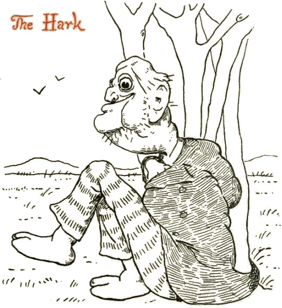
The Hark
This Animal lives in a Resess in the Forest and eats Orkids and Primroses. When there is Krisisses and things about he chuckles ——
He has a Party but it is mostly not there.
No 2.
(Mr. Arthur Balfour.)
Why. Ive left out his unkle who is a moddle of peliteness to foriners. He goes in for "Peace with—anything."
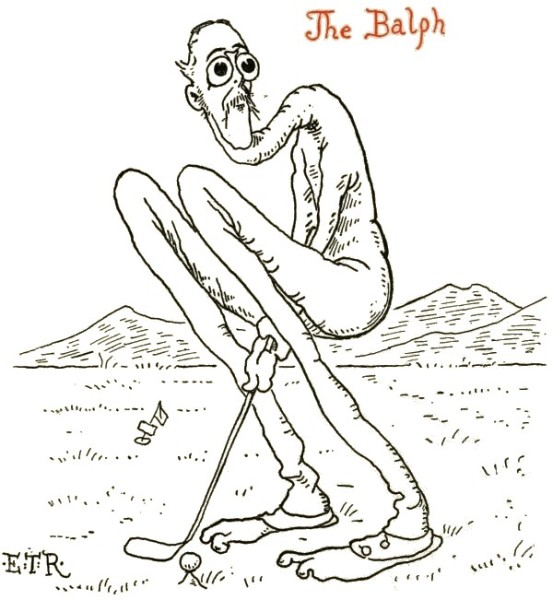
The Balph
This fascinating Animal lives chiefly in a "bunker" and feeds on stymies, cleeks, and voats of censure it is very clever and has no ennemies but it simply wont.
No 3.
(Mr. Chamberlain.)
This is not a flattring likness but there is a great fassination about its rite eye if you look close
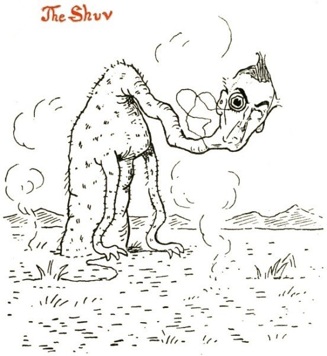
The Shuv
This Animal is a caution. It gets the best of it. It likes to live in hot water and has a nasty bite. It is better to go the other way
No 4.
(President Kruger.)
I wonder why they say this is "mannifessly inflewnced by Landsere at his best."
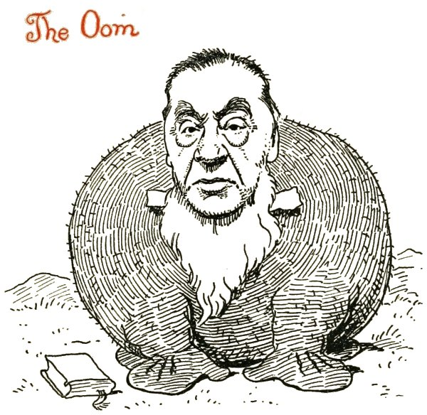
The Oom
This strange old Animal is a wily one. He is very clever and disslikes strangers. Its not a bit of good to try to coax him he only says rude things and then prays and sings hyms. The Shuv has tried him all round but he only grunts and goes on praying
No 5.
(Prince Henry of Prussia.)
The "Kyow Chyow Vissitors List" says "this is probelly a remarkable peece of portritcher." It is all theyve seen of him yet. His voige is certenly somwhat pretracted.
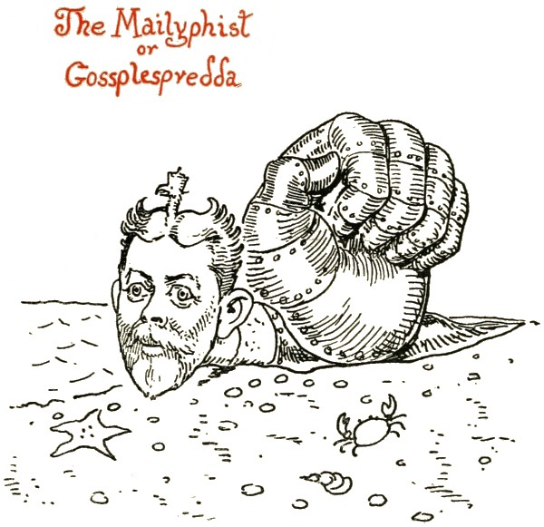
The Mailyphist or Gossplespredda
This queer little animal lives on the sea as there is not room for two of them in Germany It crawls about trying to get to China to fetch some laurels and to plant shields and cathedrils and things. If you have such a thing as a little coal about you it will be very much obliged. It will get there some day I seppose.
No 6.
(Lord Rosebery.)
I have been rather seccessfull in getting the eger hopeful look into the futesher in his eyes havnt I
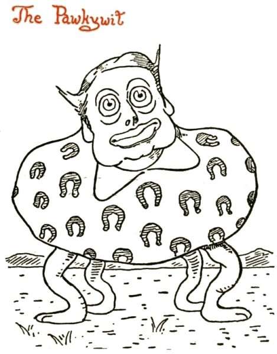
The Pawkywit
This dear little Animal likes to run on the turf and that makes the good ones start praying for him. It does not like the Hark and has a dainty little way of hiding itself among books and then it waits and waits and waits ——
No 7.
(Duke of Devonshire.)
The backround of this pickture is considered by some to be my masterpeace. They say it is just like a Corrow. I daresay it is.
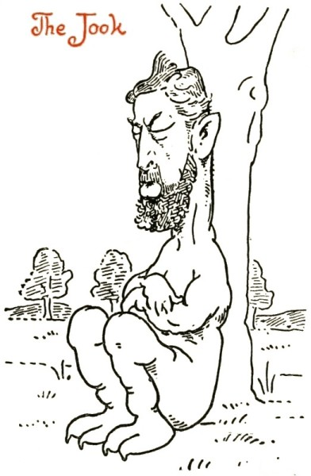
The Jook
This Animal is very trustworthy but he is always fast asleep. He would much rather you did it if you dont mind.
No 8.
(Lord Halsbury.)
Oh! I forgot all about the Marquises—they come first. That is an ovasite! What a funny little dumpy he is!
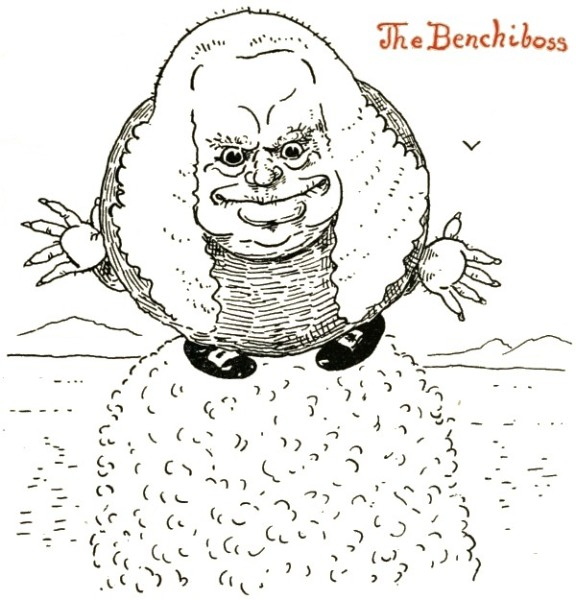
The Benchiboss
This funny little Creature is very kind and never forgets a friend. He lives on a Woolsack and gives away things ——He has got a Earlship for been so good and clever so he comes next after the Joox.
No 9.
(Mr. Labouchere.)
I thought this would be baught for the town-hawl at northamten but some malline influense must have been at work
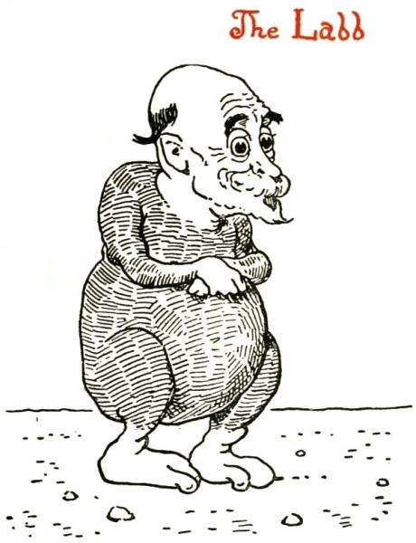
The Labb
This queer little Creature does not like roads nor peers. It likes to get into shady places and drag things out into the light. If you pretend the Hess is coming it will run into Wesminster Abbey or anywhere
No 10.
(Sir M. Hicks-Beach.)
He does look a little bare and draughty. He would have looked better with his surplus on I think.
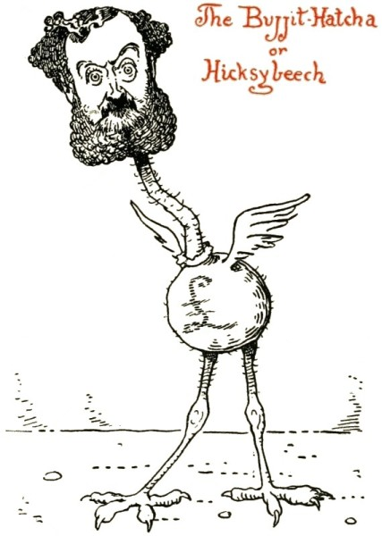
The Bujjit-Hatcha or Hicksybeech
This Animal is always trying to balance things with a little over to one side. It is very nice and plainspoken. It comes up to every front-door just to see how you are getting on and get a little something in the pound ——It lives on beer and tobacco and tin-tackses
No 11.
(Mr. Gerald Balfour.)
The criticks say this is "a life-like pressenment" and the "flesh-tints are remarkeble for there lewminosserty".
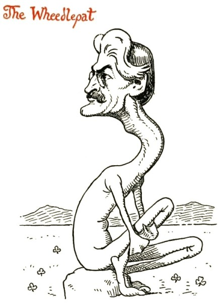
The Wheedlepat
This gracefull and culcherd Creature has a very skillful way of getting on the right side of people. They thought at first it was a fish out of water but that was quite wrong. It looks awfull solemm and poetick but that is wrong too. It is very kind and goes into every shanty and cracks jokes and pats the pig. It has got a most bewtifull bill coming which works like majick
It lives on shammrocks and stetististicks with a few batons sometimes —for rellish
No 12.
(Mr. Goschen.)
You should hear his riddle about when a lock-out is not a lock-out. It is screemingly funny and evrybody has to give it up!
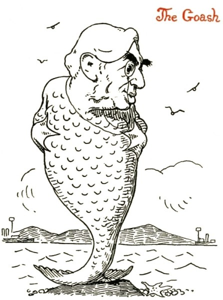
The Goash
This odd little salt-water Animal is very good at sums and gets on pretty well with the Esstimits. But if you ask him anything very dificult he runs under the gallery to get the answer. When strikes is on he is very kind and doesnt expeck no ships finished—he looks the other way
No 13.
(Professor Lecky.)
It seems a grate risk for this one to ventcher out into a rough rude world. I wonder how he gets over the crossings.
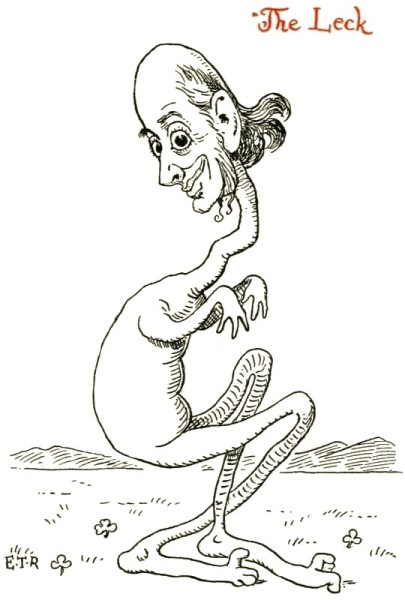
The Leck
This gentle Creature is very kind and winsome so everybody likes it. It has a wonderfull brain and knows a lot. When it sees a Artiss about it folds up and tries to look like part of the Dado. It is almost a sin to make its picture.
No 14.
(Sir Henry Irving.)
Some people considder this riting very rude—it certenly is not foolsome in its prays.
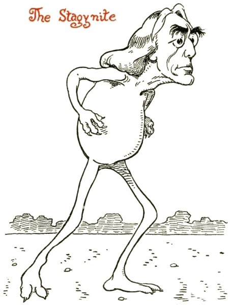
The Stagynite
This funny Creature gets up things very nicely. When people go to see it it makes the queerest noises and stamps on the floor and drags itself about. I expect he says it all right but you cant tell
No 15.
(Mr. Rudyard Kipling.)
They say I have idellised him rather but I cant help it if I have.
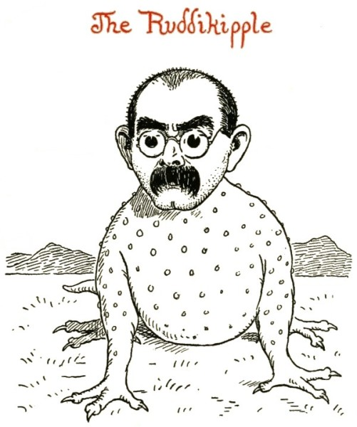
The Ruddikipple
This little Animal is very strong and viggrous and knows everything. If anybody tries to beat it it brings out a fresh tail and then nobody cant touch that either. It stirs everybody up so it would make a pew-opener want to die for his country. If a Lorryit shews his nose it just squashes him flat.
No 16.
(Lord Roberts.)
This is quite a battle-pickture. The handling seggests mysonnyer. I seem wonderfly versytial.
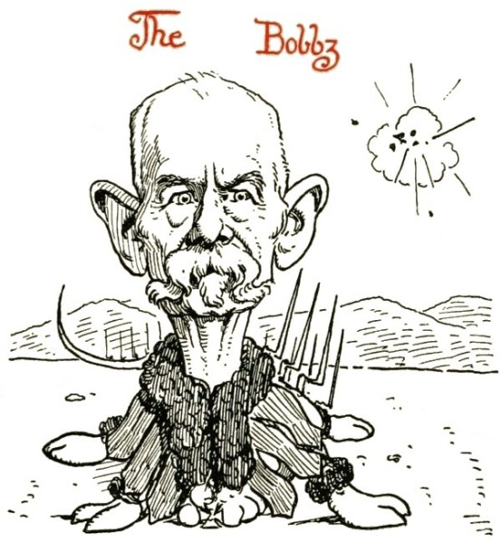
The Bobbz
This tiny little Animal is all pluck and is full of beans, but he does not try to spread himself like some do. Directly an ennemy shews his nose he has a neat little way of "pulling it off." All soldiers like him though he took them very long walks sometimes. He has got such a lot of meddles he has to leave most of them in the cloakroom.
No 17.
(Mr. John Burns.)
This is another full-face pickture. I cant do many more of them!
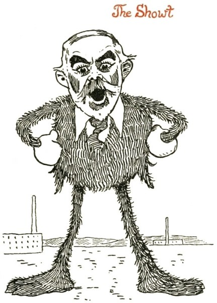
The Showt
This little Animal is very honest and likes to fight. It has a very big voice on both sides—whichever it likes. It likes to get on a waggon in the Park and call out about wellth and capicklists and things. It sounds better out of doors.
No 18.
(Sir E. J. Poynter.)
I have heard he thaught the droring of this very deaft and mastelly. I should have thaught it was a oppertewnety for the Chantrey Fun but I have herd nothing as yet.
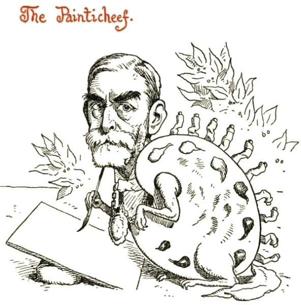
The Painticheef.
This Animal is wonderfull clever and lerned and plays at marbles with the Tadd. He stands at the top of the stairs in among the plants and goes on shaking hands with them all as they come up untill he falls back exorsted. Then they prop him up with ferns and collums and things and he just bows till daylite. He has got two awfull nice possitions to stand in too. He keeps a warn comfitable home in Traffalger Square for old worn out masters of schools that are shut up. He is dredfull particular who he takes in. He wont have them if they have gone cracked. (I shall send this pickture to the Accaddermy—he may like to put it on the line in the Blacking-White Room)
No 19.
(Mr. Alma Tadema.)
I cant help it if this did make Mister Briton Rivvyare go green with envy. It must be ennoying to see an outsighder do it so nice.
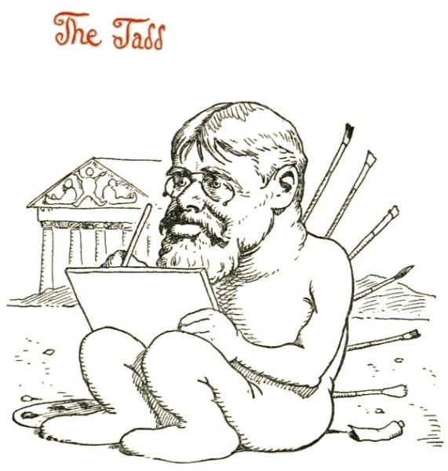
The Tadd
This little Animal is awfull good at marbles. Nobody cant do it like him. He knows all about the ancients and what kind of boots they wore on sundays and just how they use to sit about and throw roses and make refflections on things in genneral. They didn't do much else according to him. You can always tell where one of his picktures is by the crowd of artisses round it—all putting their noses agenst it and then steping back and striking silly atetudes. He has got such a big voice that as fast as they stick the picktures up, it shakes them all down again
No 20.
(M. Emile Zola.)
This is diseppointing as a work of Art
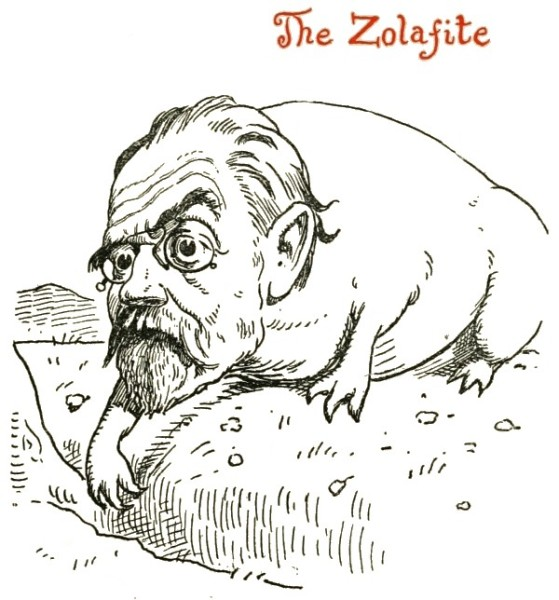
The Zolafite
This Animal is very bold and currageous. He is very clever at his work but he gets very broad in places. The lower down things are the harder he tries to get them out. The Troof is buried very deep just now and that is what he is looking for. So they are all dancing with rage and say he is a Itallian
No 21.
(Lord Wolseley.)
Sybil Corbett must be awfuly mad to see me droring as good as this. There is hardly a trase of the ammerchewer.
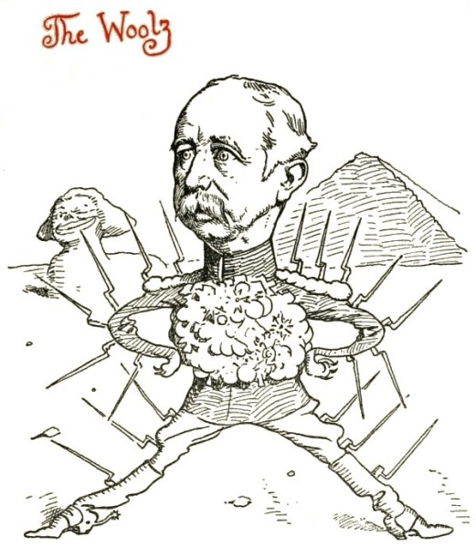
The Woolz
This brilliant little Creature is a fearfull fiter he is all over glory and titals and ilectrick-lights He likes to have his battles ready overnight then he does them in the erly morning before the milkman calls when everyone else is in bed and asleep. He gets all the powder and baynits and cammerers and repporters ready and it can all be in the papers the same day. Then he prases everyboddy else for fiting so nobbly—it sounds just like Waterlew—but somehow there is not so very many killed though it does look so terrible in the lime-lite. That is his cleverness I expeckt. Parlyment allways thanks him for it—he certanly does make a neat job of it and he has such a nice way of bringing home umbrellas and torture-chambers and things to show he has really been there. If he does anything else he will have to be made a Jookdom.
No 22.
(Sir Edward Clarke.)
This is a study in teckstchers and keeraskewroh—and a speaking likeness as well
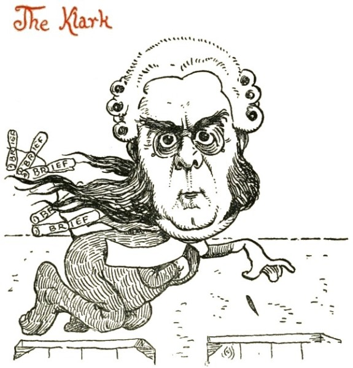
The Klark
This clever little Animal is a terror to fight. He covers himself up in silk and horsehair every day and then he runs along passages and pops into all sorts of diffrent cases one after another and draws a nice little screw out of them too. There isnt no need to be hanged while you can get him (I think this is nicer drawn than most of my picktures—I do hope he'll like it)
No 23.
(Sir E. Arnold.)
I hear he has a lovly shrine to write in at the Daly Tellegraff office and the offise-boy burns Joss-sticks at him every harf hour. It helps him to write nicer.
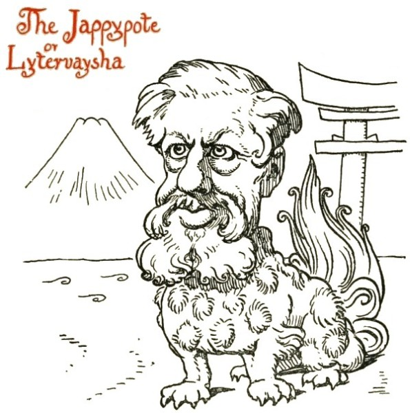
The Jappypote or Lytervaysha
This little Animal writes such nice potery. He is found at all swarries with his chest smotherd all over with stars and krisanthenums and rising suns and other ornaments. He has heard the East a calling so he doesnt like London there is not enough houris and dymios and things about. They say he is growing a pig-tail—he feels so orientle
No 24.
(Sir E. J. Reed.)
He says he did send his son to Harrow what more could he do! Spelling must have been an "extrer" I should think It is a distressing site to see the way he does it.
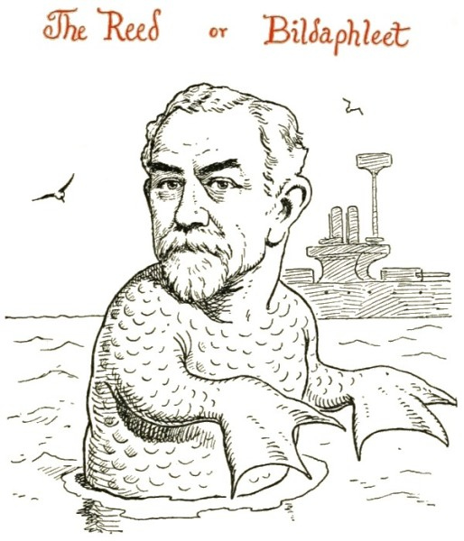
The Reed or Bildaphleet
This splendid but desining Animal is awfull good at shipps. He has a curious little taste for liking them to keep on the surfiss and flote the right way up which was very annoying to the ammerchures who mannage these things for us so nicely in parlyment. He is full of strength and boyancy and stebbility there isnt no one quite like him I think—so is his shipps they seem to last for ever as good as new. He writes such viggrous letters that is a moddle of riting and he is a good powett to. It is a grate pity he didnt teach his son how to spell he seems to get worse and worse—he is a perfeckt dissgrase.
No 25.
(Sir Arthur Sullivan.)
I had the esistents of the leading musickle exspurts in aranging the musick on him
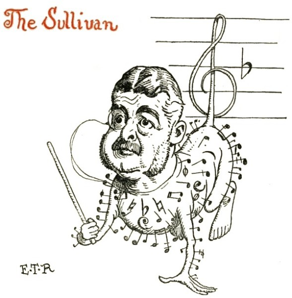
The Sullivan
This little Creature is full of the most lovly tewnes and all other kinds of musick. Nobody didnt know how humerous wind-instrymants was till he did it. He will get a trombown or a hoboy to talk just for all the world like a rettired curnel only funnier—it will make you ake with laughing. He writes the most holy tewnes too and makes you fancy you are soring about with other angels in the upper-boxes. (I wrote this wile goveness was out of the room—she would say it was awfull irevrent I exspect)
No 26.
(Mr. Dan Leno.)
I have had the nicest complements on this picture from Royal Ecademisians. They say it is so full of "veuve."
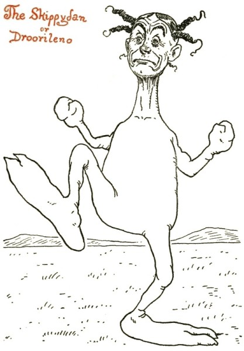
The Skippydan or Droorileno
This dear little Animal is never still for a moment though it is full of wheezes. He is very proud of his feet—you can see them if you look carefully. Sculpters rave about him—they say he is so stattuwesk
No 27.
(Mr. John Aird.)
The back-rownd seen of this pictture is laid at Filey-the-Bewtifull where the damms is to take place
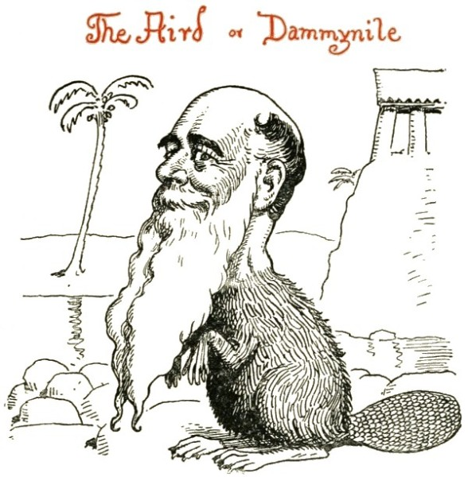
The Aird or Dammynile
This kind Animal is allways so pleased to see you. He is very enterprising and has a funny way of contrackting himself and getting into the bed of a river and blocking it all up till it runs over. I should think the whole place will be full of crockerdials and irrigators and things. He has such a bewtifull beard—it looks as if he would make a very nice prophet, dont you think so
No 28.
(Dr. Conan Doyle.)
This is a Alpyne seen. Please notise the way I have got the glare off the snow.
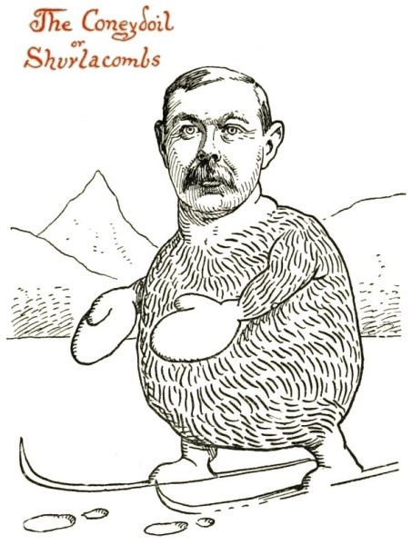
The Coneydoil or Shurlacombs
This big friendly Creature is very shrood and saggacious. If he finds a footprint he can tell you what colored hair it has and whether it is a libbral or a conservetive—which is very clever I think. He plays all games and always makes a hundred. He likes to run through the "Strand" with his tail in parts—all of them strong and healthy—then he colects it all together and it runs for a long time by itself
No 29.
(Mr. Timothy Healy.)
I find profeels ever so much easier—there is only one eye to restle with for one thing.
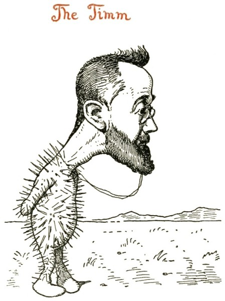
The Timm
This prickly biting little Animal is about the cleverest of them. He turns his back round to the others so you can see he hasnt got hardly any tail behind him. He has a precius nasty sting though all the same that will give you fits if you irretate him—it will make you wish you were at some quiet see-side place. He use to bellong to a party of seventy but he has turned the other sixty-nine out into the cold
No 30.
(Sir Richard Webster.)
There is few drawings that has rowsed more pubblick inthewsiasum than this one
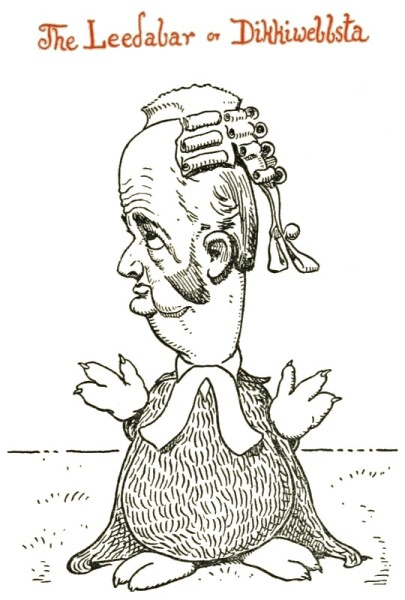
The Leedabar or Dikkiwebbsta
This able Animal has such a noble brain that there is only just room for it. It can't get any higher without going right out of the House. It sings like a bird and says it fears no foe in shining armer but hymms seems to suit it best I think. Everybody likes it as long as it doesnt get singing. It tried to make a apollergy once but it was dredfully lame and couldnt. It lives on parchment and staind-glass.
No 31.
(Sir William Richmond.)
I did enjoy doing his hair. It is done like that Cleo de Merroads!
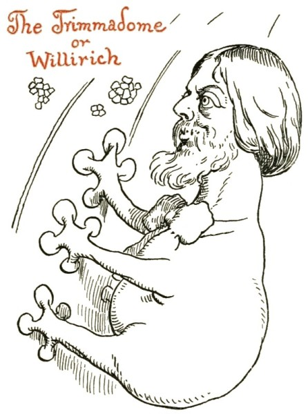
The Trimmadome or Willirich
This pleasant little Creature lives up inside a dome over a whispring gallery and spends all his time sticking on nice little pictures and patterns. You cant see much of them from downstairs but he says they are all quite relligious and he is very relliable
No 32.
(Mr. Gibson Bowles.)
Mr Spielman says "this remarkable work is reddolent of the sea and the droring of the wave-forms is worthy of Hook or Eyrecrow."
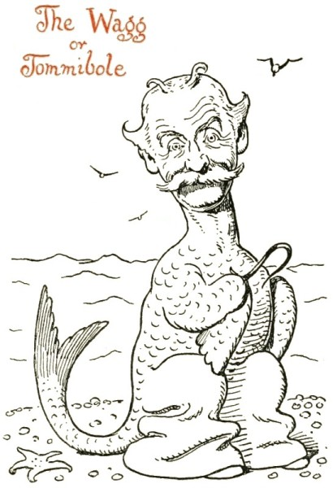
The Wagg or Tommibole
This humorous little Creature is very shy and moddest. It lives on salt-water and blue-books and what it doesnt know isnt worth a dead star-fish. When questions is on it has a nice little way of rubbing things in. It is always there
No 33.
(Sir E. Ashmead Bartlett.)
Noboddy wasnt ever so pattriottic about other peoples countries as what he is
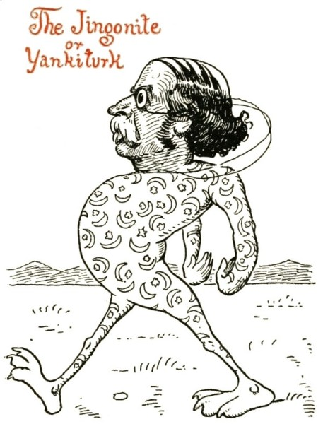
The Jingonite or Yankiturk
This odd little Animal did not grow here you would think it had to hear it talk. When it starts saving the Empier and singing Rule Britannyer very loud they only look at the ceiling and talk about the weather and how long this is likely to last
No 34.
(Sir C. Howard Vincent.)
He is a grate vollenteer too. He is a mixtcher of Moltky and Prince Ruepert at menoovers
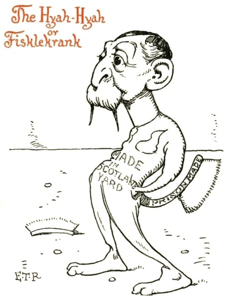
The Hyah-Hyah or Fisklekrank
This popular Animal wants to know where everything comes from—then he scribbles all over it. I believe it would label its grandmother. If it can get anybody to meddle with fiskle things it is quite happy and cheers like winking. It has got a cheer that is so loud that I exspect it will be quite out of order soon.
No 35.
(Colonel Saunderson.)
I hear he has had this framed for an air-lewm.
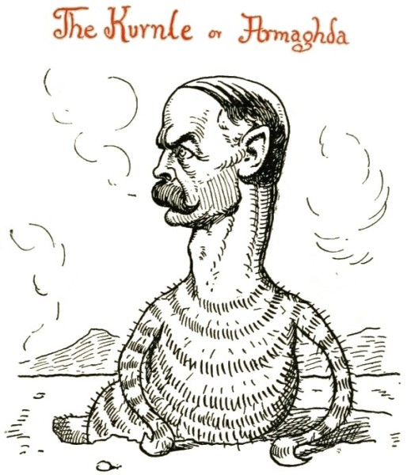
The Kurnle or Armaghda
This puggnacious Animal is allways thirsting for slaurter. He has made himself such a nice dry ditch to die in if he can get the others to come on. He wears his coats all out dragging them along the flore so that somebody may step on them. If he can get anyboddy to stop and look he will eat fire like one o'clock—but it isnt real. Just at present he is taking the hat round. Everboddy likes him tho he is such a dessprit charakter and so full of bloodtherstyniss. He draws nicely too—all exept swords—in fact he is quite a carickachuriss—like me, only I'm a perfeshernal
No 36.
(Lord Charles Beresford.)
The criticks say I have "happily renderd the sea-brease bloing through his epithettes."
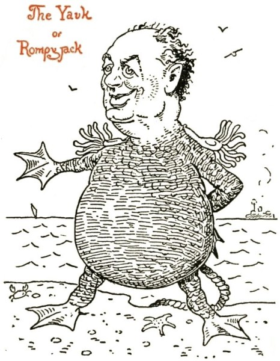
The Yauk or Rompyjack
This merry little Animal makes a good deal of noise and never runs. He is quite at home under fire or water. He just does it and thats all.
No 37.
(Mr. F. C. Burnand.)
This pickture and the nice ritin had a wonderfull bennyfishle effeckt on his state of helth
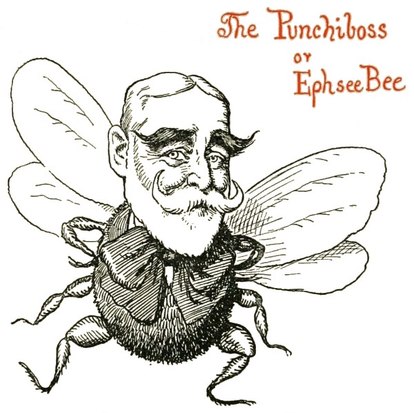
The Punchiboss or EphseeBee
This humrous little Creature has a most commical brain—full of happey thaughts. He settles on everything directly you put it in front of him. He is awfull kind to chilldren so he gives me great enkurygment when I do my picktures nice enough which is allmost allways now. He does buzz round you though and prod you up. He likes to get a good run on the boards sometimes. He has a skillful little way of knocking off a piece if it comes in his way—he is very strong in the wings. He has got a awfull clever lot of drawers and riters together—all of them genyusses and tipes of english beuty. (I must get this put in sometime when he is away—he might not like me to berlesk him after his polliteness and forceheight in letting me beggin so young.)
No 38.
(Mr. John Morley.)
It is a shame to make such a nice gentleman look so plain. There is no dowt I am not a flattrer.
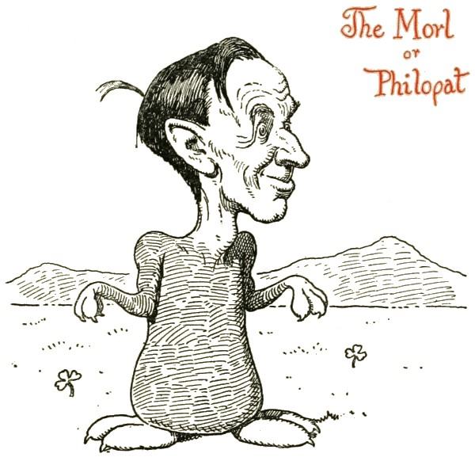
The Morl or Philopat
This kind honnest Animal is very fond of dubblin and like to play at billding a house on the green for them to fite in. He is wearing the green right through with trying so hard. When he is on the steemer he nails things on to the mast. It is very odd he sits for Scotland and stands up for Ireland. He is a bewtifull talker and riter and goveness says he is a "pewriss in stile" (watever does she mean). He is strugling to learn the sord-dance over two umbrellas. It is awfull hard though and he keeps all on kicking his ankells till he has to sit down on the flore—then he plays on the bag-pipes like the heeros in India but the neybours do complain so he will have to give it up or ellse move into another districkt
No 39.
(Sir H. H. Fowler.)
The "Maggasene of Art" thinks very highly of this one—the "Morbydetser" of it is so fine it says. I seppose theyre right
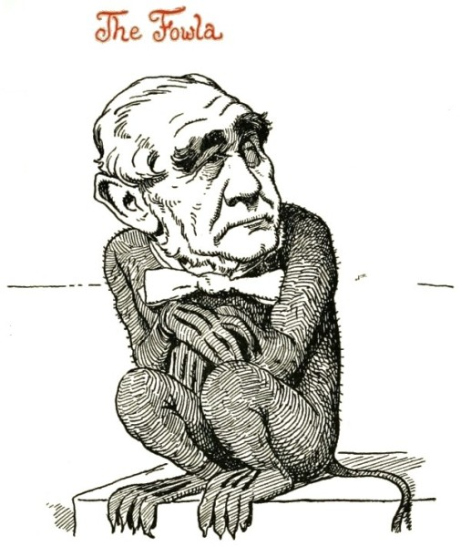
The Fowla
This abill Animal is wonderfull strong and shrood and it can Jump up and carry the whole house along with it if it likes to. It is very sollid and watey and has got a large dessenting body behind it. It knows all about "howdahs and rajahs and things" and it can turn pounds and shillings into roopees while you wait. It knows the diffrence bitween a millitry road and a footpath and if it made it itself or if someone else did—which is more than some peeple do. It can make the Jorgiehammle wish he had never had a birthday. It is a very nice corteer and queens like it imensely. It wears a indian shorl on state occajions, it doesnt fancy kilts. It is leeder of the libbral party—so is about half a dozen others too—they all do it at once but it dosnt matter much Just now
No 40.
(Mr. Leonard Courtney.)
I wish the riting would not come so long but I'm ackwiring such profishensy that I cant bring myself to short ones.
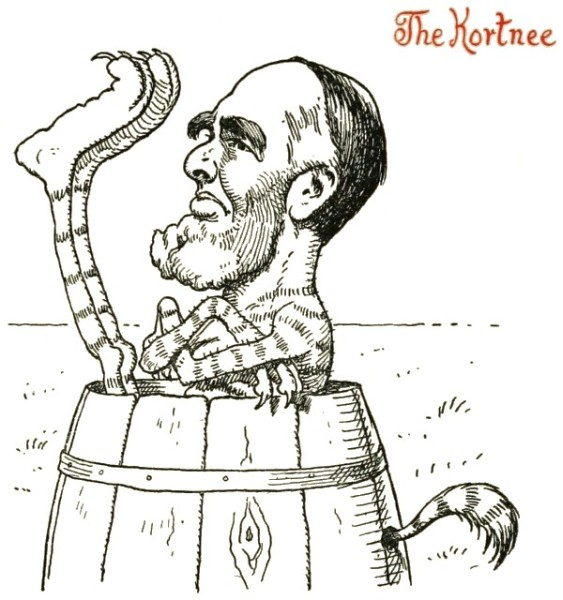
The Kortnee
This Animal has got a head full of rules and reggulatians. It is awfull fond of all kinds of riddles. the ones it likes best are those noboddy cant make head or tail of—the abstuser the better. They make your hair all come off to think of them. He use to sit in a chair and see they all behaved. He did it so nicely that they mesured him for a bigger chair but it fitted someone else best so he lives in a tub now like Diodgiknees. He gives awfull nice lecktures to passers-by and says order order to himself. He wants to have members of parlyment all diffrent sizes according to the waight of the voaters—he calls it "prepporshnal repprisentatian" (I hope I have spellt it right) isnt it silly. He is a leeder of fashion. He has got a pattent westcote of a very funny colour that is most becomming. They say he comes out all over brass buttens at night—he must look radiently bewtifull.
No 41.
(M. Paderewski.)
Isnt it rather a sub-aubern tipe of face—not quite what you would exspeckt considdring the fuss.
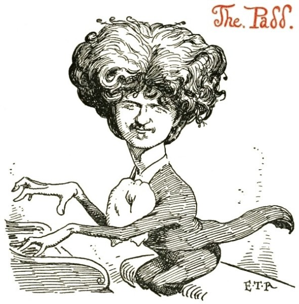
The Padd.
This curious little Creature never comes out in the same place only about once a year—that keeps his vallew up. They take him round in a selloon carrige with his name very large on the outside hermiticly seeld and deckerated with maden-hare ferns and rare browcades. They stop at the towns and let him out to play for a few minutes and then all the ladies in dabbly dresses weep and gassp and shreek out "Divvine!" andsettra and rush about after him till the pollice steps in—then they kiss the legs of the piyanno and mone for a fortnight after.
He looks more like a mopp than anything I think.
No 42.
(Mr. J. M. Barrie.)
I dont mean to say he doesnt bat very nice but he might just as well go for long drives out into the country.
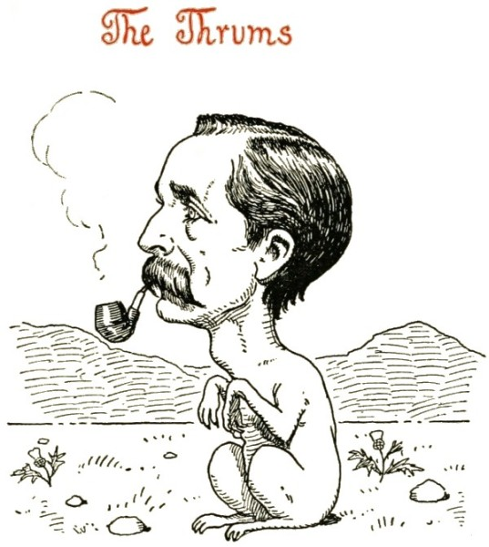
The Thrums
This dellightful little Creature is very retiring and knows a intervure direckly by his stelthy tredd. When he hears one he runs like litening and gets under the sofer-cushions or inside the peyanno or crawls in under the slates till it is all over. He use to live in a old licht-house once. He is a marvelus mixture of the most commical humour and the most beutiful paythoss. He is a reggular Ramsgitsingey at cricket. He was to have gone to Orstralia with Mr Stodert but they thought it was better for the Empire that he should not. You should see him snick them among the slippers (I hope that is right.) When he goes in to bat the fielders all come close up to him just to take hints in batting.
No 43.
(Mr. H. W. Lucy.)
I had to leave the ralings out or else you wouldnt have seen him at all
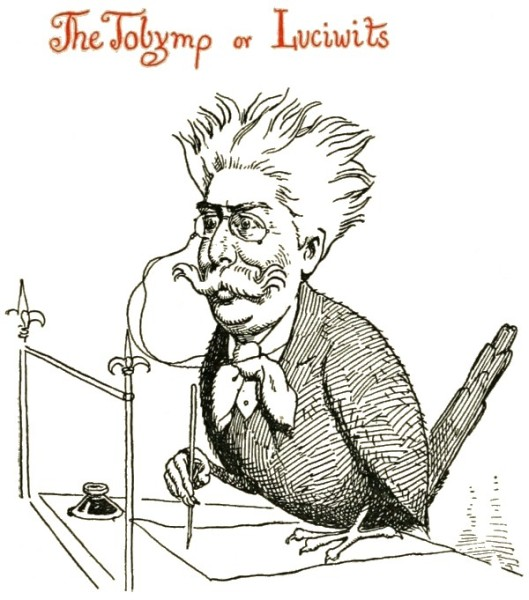
The Tobymp or Luciwits
This brilliant little Creature perches up in a gallery and peeps through the ralings and brings out the most wonderfull pennytrating notes. He prettends to be asleep but he is all the wide-awaker really. He has the most lovely head of hair—they say it is some kind of Essence what he has made up himself that makes it come so luxuryous. He rubs it into the members too sometimes but he has such a plessant skilful little way of doing it all round and just touching on the points of their bills that they rather like it I believe
No 44.
("Ouida.")
I had no idea I could do hair so natcheral as this or I would have done it bifore.
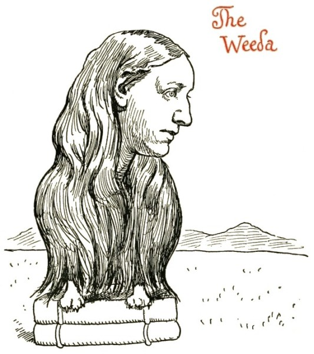
The Weeda
This sentimentle little Animal is a most wonderfull disscriber—full of gaugeous colours. She has a terrible fassinating kind of hero who goes out to battle talking several langwages with a gardeeniya and lavinder kid gloves on and carrying a ormerlew lunch-basket inlade with plovers eggs. He makes little rings with his cigerret smoke while he conkuers the enemy. He is a mixture of Sandow and Cupid and Bobby Spencer and Richard Curdyleong. She is very kind hearted to other Animals. She was thought rather risky for girls-schools sometime ago untill all the Mrs Tankyrays started dragging their "parsts" about—then it didn't matter
No 45.
(Mr. Beerbohm Tree.)
Isnt he nice and willowy. It takes a very clothes study of anattemy to draw pessitions like this.
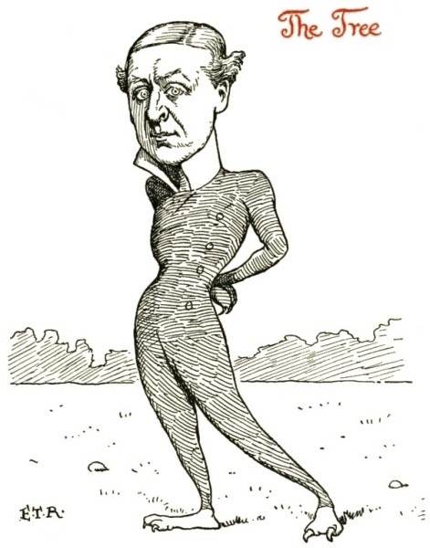
The Tree
This pickturesk Creature moves about on the boards in the most undewlating graceful manner and likes to have a skillful lime-lite man who can follow him about and squirt it nicely all over his expreshun. He has built himself a gorgeous theertre called her magesty's because she dosnt never go near it. He is awfull good at maykupps. He likes to have no end of collums all about him. The Tadd has folded all his linen for him so nice that he looks just like a real Roman figure. What a washing-bill he must have with all those toegers and forums and things.
No 46.
(Mr. Alfred Austin.)
I meant to have drorn him trying to get over a very rustick stile he's got but I quite forgot. It dosnt matter does it.
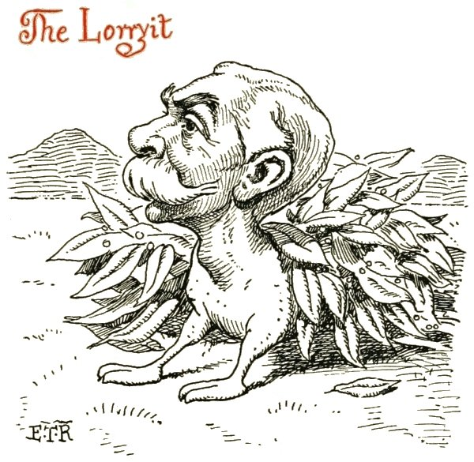
The Lorryit
This queer little Animal has got himself smotherd in with lorrels and he dosnt hardly ever show—there has been too much rime outside for him I expeckt. He is allways hearing voices what noboddy else can Once it was like wimmen and children screming out for help. Now it sounds like Ammerican. It says it wants to have done with its worn-out tail the tail of a anshent wrong (It doesnt seem to mean much—does it) When there is Royel babies going on he has to sepply the Royel familly with nice fresh odes and potery of a joyfull carecter—That is what he is for—it must be a dredfull life
No 47.
(Miss Ellen Terry.)
I am told Miss Louie Freer is very much hurt at been passed over for this one but hers is a diffrent stile of luvliness—more like a Wattow.
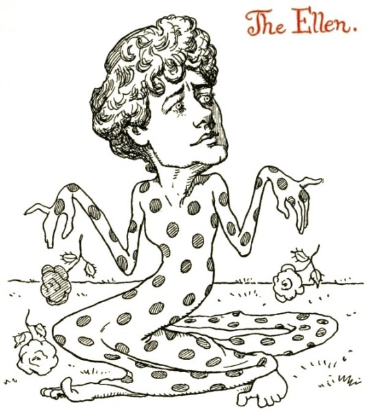
The Ellen.
This gracefull and skittish little Animal is a wonder to behold. She never seems to get no older in spight of the lapps of time. When she gets playing with the Stagynite the congrigation go quite silly with rapcher and they go on till they make her come out and bob about and kiss her hands in the most commical fashen. She is a wonderfull good Porsher and she has got a very nice Oliviyer in stock too. As long as she doesnt get too kittenish there is noboddy cant do it like her
No 48.
(Madame S. Bernhardt.)
This one seems to combine the suttle charm of a Rumney with the deckretive effeckt of a "peraffleite".
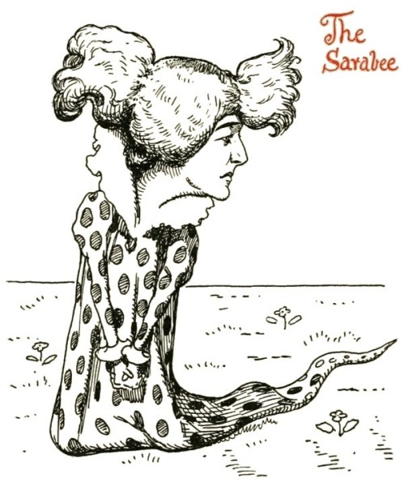
The Sarabee
This remarkeble Animal is the idle of the parizzians. It is very snakey and dramattick. It has the most blood-kerdling little ways of ettracting attenshen. When it travles it takes black tiegers and coffins and skellitens along with it to make peeple talk and shudder. It has a most lovly serching voise that is ordible in the cheap seats when you cant here a word the June premyier has got to say for himself. It is quite a sculpcher too in its way and has got a stewjio where it paints in trowsers That seems very forwerd and exentrick but we musnt be too sensurious I seppose
No 49
(Mr. Villiers Stanford.)
I havnt done justiss to the quire. I havnt quite caught the look of aggytashen and holy enthewsiasum in there eyes—the mouths took up nearly all the room in the face.
The Villistanph
This tewnful and most versytial little Animal is hily skild at every sought of mewsick. He keeps a quirefull of mewsickle arristicrats that call out Bach together. He persenally conduckts them through requiyumms and things and they get perple in the face trying to keep one eye on his conduckting-rod. It must be a great strane for the eyesite. He is awfull good at Irish Jiggs too—that must be a plesant change for them all after the congrigashen is all left.
No 50.
(Sir Henry Thompson.)
This is "a studdy of exspreshen worthy of the best peeriads of english art" so "the stewdio" says "The impassetoe is very fine" it says. I should never have thaught of that.
The Octavus
This clever soshable Animle has got a mainyer for eights of everything. Eight gests—all sellybreighted—eight wines, eight wayters, eight o'clock and then they all corrusceight and sintilleight at him like anything. He will soon been a octyginnaryin all over—wont that be a dellite to him. Hes a extrordnary surgen so he knows all about joints and things and is wonderfull good at diyett. He spends all his spare time tickling up the palette. He is a grate bleever in creamashen and says we shall all come to it some day—I dont call that pollite, do you. I thaught that was riserved for those that is not regglar attenders at church or made faces at goveness.
No 51.
(Mr. Phil May.)
I exspeckt I shall have to pressent this to the Nashnal Portret Gallry—then I shall be handed down as his "muniffisent dona."
The Phil
This commicle little Creature drors the hevenlyest picktures. He has made the portrets of all the eyleet of Petticote Lane. The critticks say he is a "masster of teckneek". It must be very nice to be called names like that—I never get it. He drors a mixtcher of Albut Dewra and Mr Sarjent and Sir Danniel Leeno. He oans a most bewtifull fringe that few can rivle. I didnt mean to give him sech a addulating when I started—I do hope it wont make him prowd and horty
No 52.
(The Perpetrator, E. T. R.)
I fear this will be a dredfull shock to some but they say I musnt tryfle with peaple's effecktions any longer. It seems a pitty to have to rellinquish my "incoggnetow."
The Wunnudiddit
This abnoxious little Animal is the anommylous auther of this Ceres. He got all in among the Stone Age once and kept all on doing the most ebsurd picktures He is a kind of Preestorick Pepys. They were a ruff lot acording to him they ocupide all there spare time chopping oneynother up and dodging the most lothsome lumpy Animals. These picktures is coming out in book-phorm now so this is the END. What a releef to crownd heads and others that has got left out and what a mersyful releese from his ettroshus stile of spelling. How dredfull plain he is too.
Bradbury, Agnew, & Co. Ld.,
Printers,
London and Tonbridge.
Every effort has been made to replicate this text as faithfully as possible, including obsolete and variant spellings and other inconsistencies.